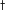

Related Content
Search Google Scholar for:
More Information
Related Jobs from ScienceCareers
|
|
Science 20 February 1998:
Vol. 279. no. 5354, pp. 1213 - 1216
DOI: 10.1126/science.279.5354.1213
|
|
Reports
Sensorimotor Adaptation in Speech Production
John F. Houde,
*
Michael I. Jordan
Human subjects are known to adapt their motor behavior to a shift
of the visual field brought about by wearing prism glasses over their
eyes. The analog of this phenomenon was studied in the speech domain.
By use of a device that can feed back transformed speech signals in
real time, subjects were exposed to phonetically sensible, online
perturbations of their own speech patterns. It was found that speakers
learn to adjust their production of a vowel to compensate for feedback
alterations that change the vowel's perceived phonetic identity;
moreover, the effect generalizes across phonetic contexts and to
different vowels.
Department of Brain and Cognitive Sciences, Massachusetts
Institute of Technology, Cambridge, MA 02139, USA.
*
To whom correspondence should be addressed. E-mail:
houde{at}phy.ucsf.edu
Present address: University of California San Francisco, Keck
Center, 513 Parnassus Avenue, S-877, San Francisco, CA 94143-0732, USA.
Read the Full Text
THIS ARTICLE HAS BEEN CITED BY OTHER ARTICLES:
- Calcium Dynamics Encode the Magnitude of a Graded Memory Underlying Sensorimotor Adaptation.
- N. C. Dembrow, D. L. Pettit, and H. H. Zakon (2010)
J Neurophysiol
103, 2372-2381
| Abstract »
| Full Text »
| PDF »
- There's more to speech perception than meets the ear.
- J. F. Houde (2009)
PNAS
106, 20139-20140
| Full Text »
| PDF »
- Functional But Not Structural Networks of the Human Laryngeal Motor Cortex Show Left Hemispheric Lateralization during Syllable But Not Breathing Production.
- K. Simonyan, J. Ostuni, C. L. Ludlow, and B. Horwitz (2009)
J. Neurosci.
29, 14912-14923
| Abstract »
| Full Text »
| PDF »
- Social Context Rapidly Modulates the Influence of Auditory Feedback on Avian Vocal Motor Control.
- J. T. Sakata and M. S. Brainard (2009)
J Neurophysiol
102, 2485-2497
| Abstract »
| Full Text »
| PDF »
- Online Contributions of Auditory Feedback to Neural Activity in Avian Song Control Circuitry.
- J. T. Sakata and M. S. Brainard (2008)
J. Neurosci.
28, 11378-11390
| Abstract »
| Full Text »
| PDF »
- Effects of Short- and Long-Term Changes in Auditory Feedback on Vowel and Sibilant Contrasts.
- H. Lane, M. L. Matthies, F. H. Guenther, M. Denny, J. S. Perkell, E. Stockmann, M. Tiede, J. Vick, and M. Zandipour (2007)
J Speech Lang Hear Res
50, 913-927
| Abstract »
| Full Text »
| PDF »
- Real-time contributions of auditory feedback to avian vocal motor control..
- J. T. Sakata and M. S. Brainard (2006)
J. Neurosci.
26, 9619-9628
| Abstract »
| Full Text »
| PDF »
- Perturbation of auditory feedback causes systematic perturbation in vocal structure in adult cotton-top tamarins.
- S. E. R. Egnor, C. G. Iguina, and M. D. Hauser (2006)
J. Exp. Biol.
209, 3652-3663
| Abstract »
| Full Text »
| PDF »
- Dynamics of Auditory-Vocal Interaction in Monkey Auditory Cortex.
- S. J. Eliades and X. Wang (2005)
Cereb Cortex
15, 1510-1523
| Abstract »
| Full Text »
| PDF »
- Plasticity in Primary Auditory Cortex of Monkeys with Altered Vocal Production.
- S. W. Cheung, S. S. Nagarajan, C. E. Schreiner, P. H. Bedenbaugh, and A. Wong (2005)
J. Neurosci.
25, 2490-2503
| Abstract »
| Full Text »
| PDF »
- Experimental test of the birdsong error-correction model.
- A. Leonardo (2004)
PNAS
101, 16935-16940
| Abstract »
| Full Text »
| PDF »
- Sensory-Motor Interaction in the Primate Auditory Cortex During Self-Initiated Vocalizations.
- S. J. Eliades and X. Wang (2003)
J Neurophysiol
89, 2194-2207
| Abstract »
| Full Text »
| PDF »
- A Neural Basis for Auditory Feedback Control of Vocal Pitch.
- M. Smotherman, S. Zhang, and W. Metzner (2003)
J. Neurosci.
23, 1464-1477
| Abstract »
| Full Text »
| PDF »
- Doppler-shift compensation behavior in horseshoe bats revisited: auditory feedback controls both a decrease and an increase in call frequency.
- W. Metzner, S. Zhang, and M. Smotherman (2002)
J. Exp. Biol.
205, 1607-1616
| Abstract »
| Full Text »
| PDF »
- Compensation for the Effects of Head Acceleration on Jaw Movement in Speech.
- D. M. Shiller, D. J. Ostry, P. L. Gribble, and R. Laboissiere (2001)
J. Neurosci.
21, 6447-6456
| Abstract »
| Full Text »
| PDF »
- An Associational Model of Birdsong Sensorimotor Learning I. Efference Copy and the Learning of Song Syllables.
- T. W. Troyer and A. J. Doupe (2000)
J Neurophysiol
84, 1204-1223
| Abstract »
| Full Text »
| PDF »
|
|